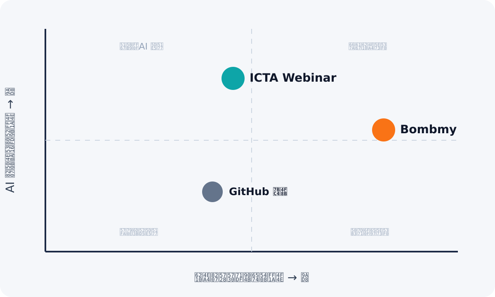

ICTA 距離 Bombmy 有多遠？
一句話答案：核心自動化 Webinar 體驗約完成六成，但若以可商用的「全自動成交平台」衡量，目前約在 40–45%。差距集中在成交、渠道與數據閉環，不是播放器。
建議定位
為華語知識型創作者與顧問，ICTA Webinar 是一套「AI 輔助成交的自動化研討會平台」。相較 Bombmy 的完整台灣成交營運鏈，ICTA 應以 AI 即時問答、AI 互動腳本與更細緻的行為追蹤形成差異，而不是逐功能複製。
優先 1｜補成交閉環
建立 Webinar 商品、外部付款／台灣金流連結、CTA 點擊與購買 Webhook 歸因。
優先 2｜補量測閉環
真正收集播放、離場、CTA、checkout、purchase 事件。
優先 3｜補台灣渠道
先做 LINE OA，再補 SMS；ManyChat 先走通用 Webhook。
時間估算
2 位全職工程師＋快速產品決策：12–18 週可補到核心功能正面競爭；達到成熟營運水準約 6–9 個月。單人開發通常需 6–12 個月。
三者不是同一類產品成熟度
| 項目 | 定位／階段 | 價格 | 主要強項 | 主要弱項 |
|---|---|---|---|---|
| Bombmy | 台灣商用產品 | 未公開；導向免費體驗 | 台灣金流、SMS、CRM、聯盟行銷、完整成交鏈 | 公開技術／定價透明度低；獨立評論薄弱 |
| ICTA Webinar | 可運作 SaaS MVP | US$49／99 月；加購房 US$20 | AI 問答、On-demand＋排程、嵌入、權益安全 | 無台灣金流／LINE／SMS；購買歸因不完整 |
| GitHub 範例 | 單一活動 Demo | 免費原始碼；無正式授權檔 | n8n、Sheets、優惠券、Lead Table、WhatsApp | 模擬付款；非多租戶；安全成熟度不足 |
Bombmy 證據品質
功能依官網公開文案核實；成效案例屬品牌自述。未找到足量獨立評論，不可視為第三方驗證。
GitHub 健康度
2025-09 建立、最後推送 2025-11、2 stars、0 forks、無 LICENSE 檔，不建議直接複製進商用產品。
核心差距矩陣
權重 5 代表最直接影響客戶購買決策。
| 能力 | 權重 | ICTA | Bombmy | GitHub |
|---|---|---|---|---|
| 排程＋隨到即播 | 5 | 強 | 強 | 弱 |
| 預錄與擬真直播 | 5 | 強 | 強 | 弱 |
| 預設聊天／虛擬人數 | 4 | 強 | 強 | 弱 |
| 定時 CTA／倒數 | 5 | 部分 | 強 | 弱 |
| 報名頁＋多場次 | 5 | 強 | 強 | 弱 |
| Lead 欄位／標籤 | 4 | 有 | 強 | 有 |
| Email 提醒／分眾 | 5 | 部分 | 強 | 部分 |
| LINE／SMS／ManyChat | 5 | 無 | 部分 | 部分 |
| 商品／付款／購買歸因 | 5 | 無 | 強 | 模擬 |
| 留存／轉換分析 | 5 | 部分 | 部分 | 部分 |
| Pixel／GTM | 4 | 無 | 有 | 無 |
| AI 問答／內容生成 | 4 | 強 | 弱 | 部分 |
| 嵌入／Widget | 3 | 強 | 部分 | 無 |
| 多租戶 SaaS／訂閱 | 4 | 強 | 強 | 無 |
Bombmy 的分析與廣告設定由官網功能清單證實，但公開頁不足以確認事件粒度，因此保守評分。
不應追成 Bombmy 的較小版本
最有機會的白地，是把 AI 即時協助、細緻觀看行為與自動追銷串成閉環。

Bombmy 的護城河
台灣金流、SMS、CRM、聯盟行銷、附屬帳號與一條龍營運。
ICTA 可建立的護城河
AI 理解 Webinar 內容與觀看階段，把問題與行為轉成精準追銷。
若只補齊 Bombmy 現有功能，ICTA 會進入同質化價格競爭；先補量測與成交，再把 AI 放在每個漏斗節點，才有清楚可賣的差異。
基本盤與差異化
Basics
排程、報名、提醒、定時 CTA、退訂、購買歸因、Pixel/GTM、可信漏斗報表。
Performance
多時區、LINE/SMS、CRM 分群、台灣金流、留存分析、自動化彈性。
Delighters
AI 成交助理、依觀看秒數追銷、AI 離場分析、個人化優惠。
市場白地
1｜AI × 行為事件
看到第 28 分鐘離開 → AI 判斷疑慮 → 自動選擇 LINE／Email 訊息。
2｜華語創作者的輕量方案
用較低月費＋自助上線，服務尚未需要完整 CRM 的中小型團隊。
3｜可攜式 Webinar Widget
嵌入既有 WordPress／課程站，降低換站成本。
180 天追趕路線
0–30 天｜每一個成交事件可被看見
統一 landing_view、registration、video_progress、dropoff、cta_view、cta_click、checkout_start、purchase。完成 Pixel／GTM、購買 Webhook 與真實事件報表。
31–90 天｜補上可直接賣的成交閉環
Webinar 商品／Offer、定時優惠、名額提示、付款連結與購買歸因。先串綠界或藍新一家，再補 LINE OA。
91–180 天｜把 AI 變成真正差異化
讓 AI 依觀看進度、聊天問題、CTA 與商品資料決定追銷分群，並保留人工審核。
銷售 Battlecard
• 能知道客戶是在 CTA 前、CTA 後，還是價格出現時離開嗎？
• 客戶在直播中問過的問題，會影響他收到的追銷內容嗎？
• 你需要完整 CRM，還是能快速嵌入既有網站的 AI Webinar？
可以參考，但不能當底座
這是單一課程活動的漏斗 Demo。核心付款是模擬，資料依賴 Google Sheets＋n8n，並非多租戶 Webinar SaaS。
值得借鑑
n8n webhook、Lead Table、優惠券、Need Time／Failure 狀態、WhatsApp 導流、付款結果頁、CSV 與日期篩選。
不要直接移植
模擬付款、Sheets 作交易資料、n8n 卡住登入、非多租戶、無播放事件、日誌過細、缺 LICENSE。
建議採用方式
把它當成流程草圖，不要 merge 程式碼。可轉化成 ICTA 原生功能的是：通用 Webhook／n8n 觸發器、Lead Funnel Table、優惠券與付款狀態、WhatsApp／LINE 導流。核心資料留在 PostgreSQL，Webhook 必須非同步、可重試並具 idempotency。
最終判定
參考價值 6/10。產品流程借鑑：高；直接重用程式碼：低；取代目前 ICTA 架構：不建議。
資料來源
[1] Bombmy 官方網站
https://www.bombmy.live/
[2] Bombmy 免費體驗入口
https://bo-get.com/bombmygw
[3] Webinar-Sales-Funnel 原始碼
GitHub repository
[4] GitHub metadata API
API metadata
[5] ICTA Webinar 內部程式碼稽核
本工作區 routes、schema、播放器、analytics、email scheduler、Stripe entitlement 與營運文件。
重要限制
Bombmy profile 主要根據官方首頁；成效聲明未經第三方驗證。登入後功能、事件粒度與寄信到達率未經帳號實測。GitHub metadata 截至 2026-09-03：2 stars、0 forks、最後推送 2025-11-19、未偵測到 LICENSE。ICTA 標記「部分」通常代表資料模型／UI 已存在，但端到端商業流程未完全閉環。